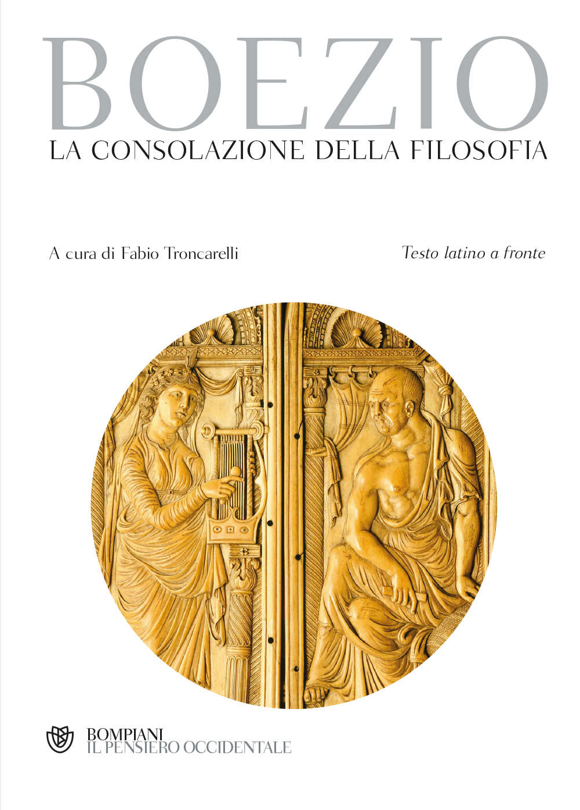

23:58 · 6 OPERE
L'invisibilità dei sapienti.
Il filo del discorso
L’invisibilità di Kafka, Pessoa e altri pensatori nel proprio tempo introduce una riflessione sulla distanza fra notorietà e valore della conoscenza. Dr Divago discute premi, riconoscimenti e scelta di vivere appartati, contrapponendo l’attenzione allo studio alle richieste dell’industria culturale. Il discorso attraversa immagini bibliche della sapienza, il richiamo di Heine ai libri bruciati e la Consolazione della filosofia di Boezio. La tradizione dei giusti nascosti accompagna poi il confronto fra vita interiore, conformismo e narcisismo. Una citazione dalla Libreria stregata e altri riferimenti letterari conducono alla conclusione: per il relatore, conoscere significa trasformare il proprio sguardo, senza misurare il pensiero con la sola visibilità pubblica.
I libri nel discorso

Proverbi
Note sul riferimento
Copertina della Bibbia che contiene Proverbi: San Paolo, 2014 · Nuova Versione dai Testi Antichi · edizione di riferimento
Copertina dell’intera Bibbia. Non rappresenta un’edizione autonoma dei Proverbi e non identifica l’edizione citata nel video.
Il libro dei Proverbi è nominato nel passo sulla Sapienza che grida nelle vie: riferimento a 1,20–21.
Almansor. Eine Tragödie
Identificazione probabile
Note sul riferimento
Copertina: Hofenberg · edizione tedesca · 2015
Immagine autentica dell’opera, controllata visivamente; l’edizione di riferimento non è attribuita al filmato.
Heine e la frase sui libri bruciati sono richiamati senza titolo: riscontro probabile in Almansor.

La consolazione della filosofia
Note sul riferimento
Copertina: Bompiani, 2019
Boezio e La consolazione della filosofia annunciati prima della lettura.

Genesi
Note sul riferimento
Copertina: Einaudi, I libri della Bibbia / Einaudi Tascabili, 2000; introduzione di Steven Rose
Copertina dell’edizione autonoma Genesi, nella serie I libri della Bibbia, con introduzione di Steven Rose. Edizione scelta come riferimento iconografico; nessuna edizione è confermata nel video.
Il libro della Genesi è nominato nel racconto di Abramo e Sodoma.

La libreria stregata
Note sul riferimento
Copertina: Sellerio · La memoria 264 · 1992
Immagine autentica dell’opera, controllata visivamente; l’edizione di riferimento non è attribuita al filmato.
Christopher Morley e La libreria stregata annunciati prima del passo sugli amanti dei libri.

Qoèlet (Ecclesiaste)
Identificazione probabile
Note sul riferimento
Copertina: Adelphi, Biblioteca Adelphi 414, 2001
Edizione autonoma del libro biblico, versione e commenti di Guido Ceronetti. Non è una copertina della Bibbia integrale né un’edizione confermata nel video.
La formula niente di nuovo sotto il sole richiama probabilmente Qoèlet 1,9 senza annunciarne il titolo.